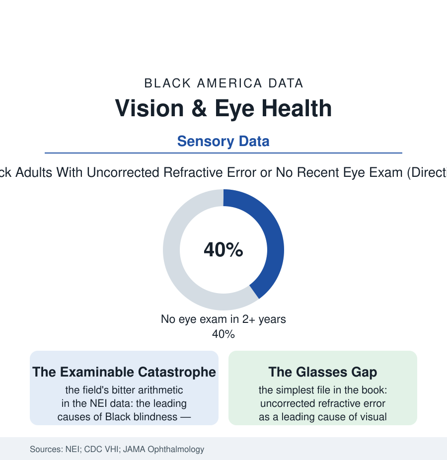

Black Public Health
The Eyes Have It Last: Vision Care and the Preventable Dark
Black Americans go blind from treatable eye disease at multiples of the white rate — in a field where nearly every major cause is preventable with a pair of glasses, a drop, or a timely laser. The vision file.

Of all the files in this section, the vision file may be the most damning, because its catastrophe is the most preventable: the diseases that blind Black Americans at multiples of the white rate are, nearly every one, detectable in a routine exam and treatable when caught — the blindness accumulating instead in the gap between the disease and the appointment. This article reads the vision file.
Three Diseases, One Bottleneck
The etiology divides, in the eye institute's accounting, among the section's old names wearing ophthalmic forms: glaucoma (the pressure disease of the glaucoma file — earlier, faster, and more blinding in Black eyes, its detection hostage to the dilated exam the population receives late), diabetic eye disease (the diabetes file's retinal chapter — the retinopathy that the annual dilated exam catches at the laser's curable stage and the missed years deliver to the vitreoretinal surgeon), and cataract (the cataract file's clouded lens, the world's most curable blindness, its surgical wait the file's own study), with uncorrected refractive error — the simple need for glasses — ranking in the impairment surveys as a leading cause all by itself, the only entry in the section whose entire treatment is an object sold in malls. The common bottleneck is the exam itself, and its data draw the access file's exact portrait: the eye exam's separate coverage silo (vision carved out of the medical insurance the body uses — the vision plan's thin network and annual ritual, the uninsured eye simply unexamined), the specialist geography (the ophthalmology workforce's urban concentration against the diabetic map), the asymptomatic trap that runs the whole file — the blinding diseases silent until late, the glaucoma patient seeing fine around his dying periphery, the retinopathy patient reading the chart the week before the hemorrhage — the screening-dependent diseases assigned, in the American system, to a screening nobody is charged with delivering. The disparities' arithmetic in the outcome surveys is the section's standard multiple, here attached to the sense the surveys' subjects rank, in the preference studies, the one they most fear to lose.
The Instruments of Sight
The correction's toolkit is, for once in this book, largely built — the file becomes a study in deployment: the screening camera's migration (the retinal photograph taken in the primary-care office and read remotely — the diabetic file's annual exam finally deliverable at the visit the patient already makes, the AI reading systems cleared to grade the images autonomously, their accuracy audits carrying the section's familiar instruction to validate across the pigmentation range of the fundus itself), the school screening's second look (the vision file's childhood rows — the screen-and-refer pipeline whose follow-through rates in the urban data are the file's scandal in miniature: the child screened, the referral mailed, the glasses never obtained, the board still blurry — the programs that close the loop with the optician in the school posting the cure), and the coverage experiments (the states folding the adult vision benefit into the public plans, the exam and the glasses riding one card, the utilization data answering). The elder rows carry the stakes' sum: vision loss as the cascade's trigger in the aging files — the fall, the surrendered license and with it the independence file's keys, the label unread and the dose doubled, the depression of the darkened room — the cataract file's gift (the fifteen-minute restoration) appreciating with every system it keeps the elder out of. The file closes with the optician's counter, the one place in this whole book where a leading cause of disability is cured over the counter, in an hour, for the price of a dinner out — and the line outside it, in the data, is not a line of the blind. It is a line of the unexamined, the unreferred, and the uninsured, waiting on the simplest appointment in medicine.
Reading the Vision Data
The vision file is the health section's clearest case: the cure predates the crisis by a century, and only the delivery is missing. The NEI publishes the rates. The school nurse's screening chart — and the referral slip in the backpack, followed or forgotten — publishes the system, at reading distance.
More in Black Public Health
Hypertension Among Black Adults: Prevalence, Control, and Consequences
About 55 percent of Black adults have hypertension — the highest rate of any U.S. group. Prevalence, onset, control, and the stroke, heart, and kidney consequences in the data.
Diabetes Among Black Adults: Prevalence and Complications
Nearly one in five Black adults has diabetes, diagnosed or undiagnosed — and its complications fall with particular weight. The CDC data on prevalence, control, and outcomes.
Black Life Expectancy: The Gap at Birth and Its Causes
Black life expectancy at birth is about 73 years, roughly five years below the national figure — the summary measure of every health gap in this section. The CDC data.
Source: National Eye Institute and CDC Vision Health Initiative data; National Health Interview Survey; Prevent Blindness and JAMA Ophthalmology research.